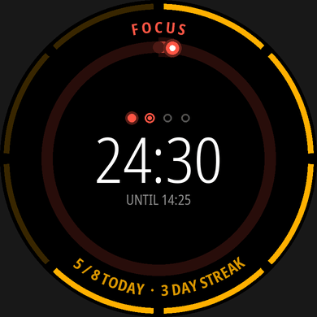
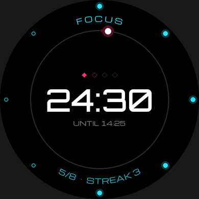
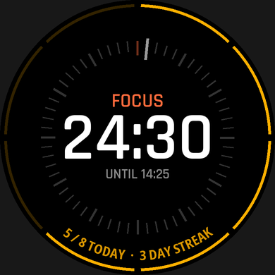
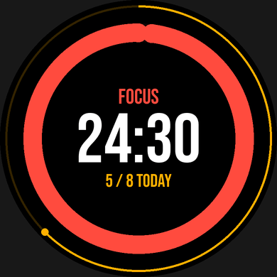
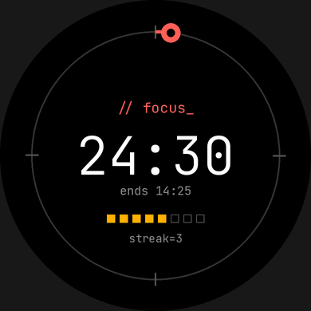
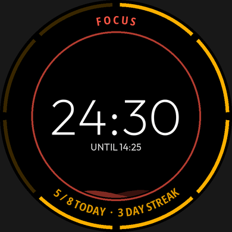
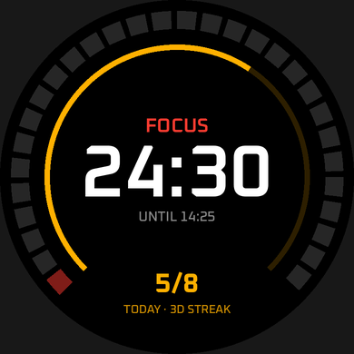
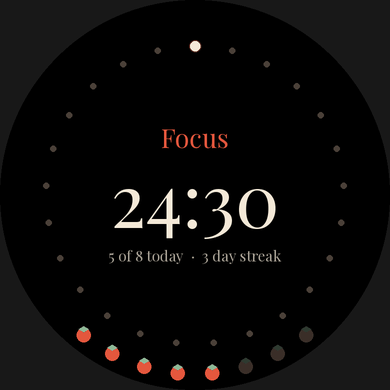

Each loop is one whole session, sped up. On the watch the ring moves once per second. Example data: focus session, 5 of 8 pomodoros today, 3-day streak. Curved labels use a stand-in for the watch's built-in Roboto Condensed. Timer fonts are the real ones, embedded as bitmap fonts. Mix and match is possible, e.g. the Dial ring with the Bebas font.

Noto Sans Condensed Light
Gradient arc with a glowing tip that breathes; goal ring split into one segment per pomodoro; curved labels.
Current design. Works as-is at 1 update/sec.

Orbitron Medium + Michroma
Hairline track with a comet head and fading tail; goal as glowing dots; magenta and cyan.
1 update/sec is fine; the flicker needs faster redraws while the screen is on.

Rajdhani SemiBold
60 stopwatch ticks light up one by one; the newest tick flashes; thin segmented goal ring.
Works at 1 update/sec (one tick ≈ 25 s for a 25-min focus).

Bebas Neue
Thick ring that drains away as time runs out; continuous goal arc with a knob; bold condensed type.
Works at 1 update/sec.

JetBrains Mono Light
Minimal hairline ring with a donut knob; goal as squares; blinking terminal cursor.
Works at 1 update/sec (the cursor blinks once per second).

Outfit ExtraLight
The dial fills up like a glass with two rippling waves; segmented goal ring; curved labels.
The level rises at 1 update/sec; smooth ripples need faster redraws (more battery).

Oxanium SemiBold
270° segmented gauge, like a speedometer; inner goal gauge; count shown in the bottom gap.
Works at 1 update/sec; the leading block blinks.

Playfair Display
Serif numerals; one dot per minute around the dial; little tomatoes for the daily goal; warm cream palette.
Works at 1 update/sec (one dot per minute).